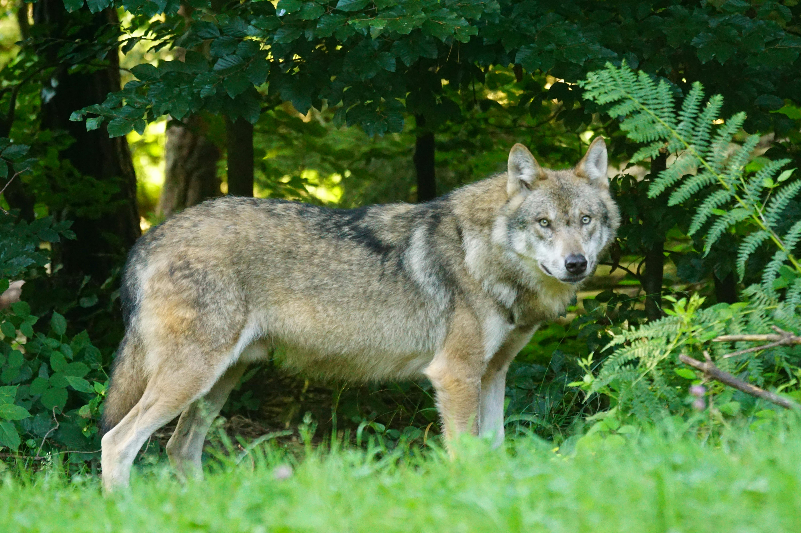

MAMMALS
Lions
Known as the kings of the jungle, lions symbolize strength and courage. Their social structure is centered around family groups called prides.
Learn More
Tigers
These majestic predators are known for their striking orange coat and black stripes. They are solitary hunters with incredible strength.
Learn MoreBears
These large mammals are known for their thick fur and powerful bodies. Bears are omnivores, foraging for both plants and animals.
Learn More
Elephants
The largest land animals, elephants are known for their intelligence and strong social bonds. They play a crucial role in their ecosystem.
Learn MoreGiraffes
Recognized by their long necks and legs, giraffes are the tallest land mammals. They browse on leaves high in trees, mainly acacias.
Learn More
Zebras
Famous for their black and white stripes, zebras are social animals that live in herds. Their stripes help with camouflage against predators.
Learn MoreKangaroos
Known for their powerful hind legs and unique hopping movement, kangaroos are a symbol of Australia. They live in social groups called mobs.
Learn MoreDeer
Graceful and agile, deer are herbivorous mammals that thrive in various habitats. They often have antlers, which are shed and regrown annually.
Learn More

Wolves
As highly social predators, wolves live and hunt in packs. They are known for their loyalty and strong family bonds within the pack.
Learn More
Rabbits
These small mammals are known for their long ears and quick movements. Rabbits are social animals that often live in groups.
Learn MoreHippos
Despite their massive size, hippos are highly agile in water. They spend most of their time submerged to keep cool in hot climates.
Learn More
Rhinos
These large mammals are known for their thick skin and one or two horns on their snouts. Rhinos are mostly solitary and have a strong territorial instinct.
Learn MoreCheetahs
Renowned for being the fastest land animal, cheetahs are built for speed. Their slender bodies and long legs enable them to sprint at high speeds.
Learn More
Squirrels
These small rodents are known for their bushy tails and agile movements. Squirrels are primarily herbivorous and are often seen gathering nuts.
Learn More